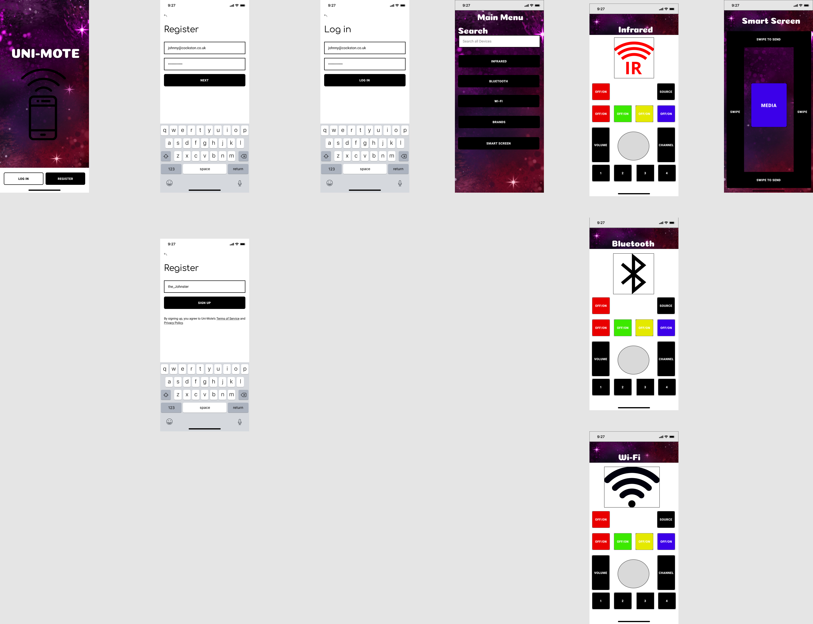
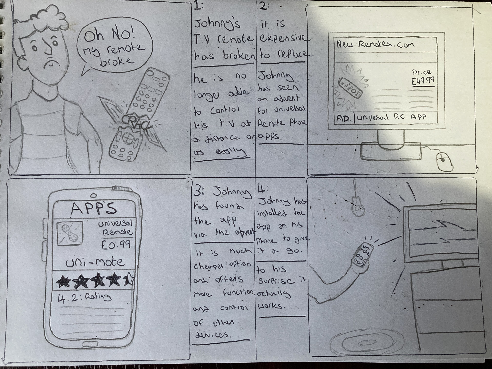
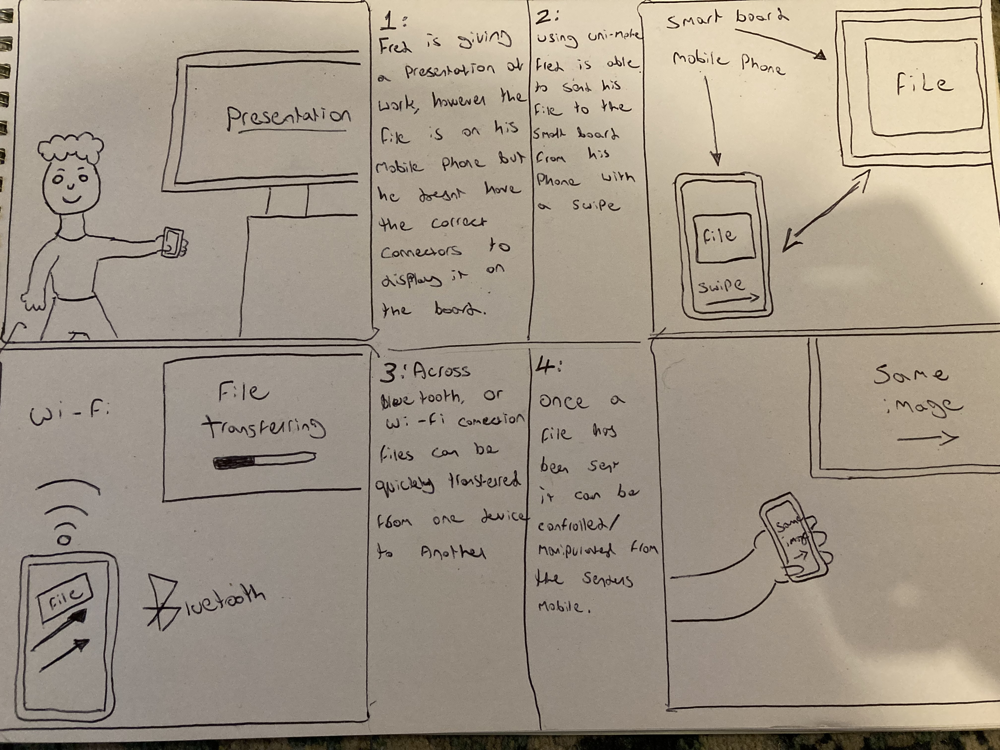

A universal remote app concept built around familiar controls, device pairing and a Figma prototype.
Project brief
For my User Experience Design portfolio, I designed a mobile app that would put controls for televisions and other connected devices in one place. Uni-Mote was a researched and prototyped concept, rather than a working replacement for every physical remote.
UX researchPersonasPrototypingFigma
Why a universal remote?

The final Figma board, from sign-in to remote controls and a Smart Screen idea.
The problem was familiar: a broken or missing remote, several devices in the same room, and a different control layout for each one. Uni-Mote proposed a single phone app for finding a device, choosing its connection type and showing controls that felt recognisable to someone who had used the original remote.
I compared existing universal-remote apps, including Twinone, Mi Remote and AnyMote. Their strengths included device libraries and search, while some layouts felt too generic, cluttered or difficult to distinguish. That research led to ideas such as clearer labels, search and pairing, device-specific controls, and separate paths for infrared, Bluetooth and Wi-Fi.
People, tasks and scenarios

A scenario used to think through a broken remote and the first app session.
The sketchbook used personas, journey maps and task-based scenarios to test whether the idea solved an actual problem. One scenario follows a person who breaks a TV remote and wants to control the television without waiting for a costly replacement. Another explores sending a presentation from a phone to a nearby display.
These examples helped define a path through the interface: arrive at the welcome screen, register or sign in, find the right device, choose a connection type and reach the relevant controls. I also considered people who find small physical remotes difficult to handle, so familiar layouts and readable labels mattered more than adding features for their own sake.
Iteration and the final board

Smart Swipe: a proposed interaction for sending media to another screen.
The work moved from wireframe sketches to alpha and beta screens in Figma. The final board includes welcome, registration and login, a searchable device menu, and different control screens for infrared, Bluetooth and Wi-Fi. It also shows Smart Screen, a proposed swipe interaction for transferring media or a presentation to another device.
Smart Screen and universal compatibility were ambitions for the concept, not completed technical integrations. The project was mainly an exercise in competitor analysis, user journeys and translating a broad idea into a clearer mobile interface.